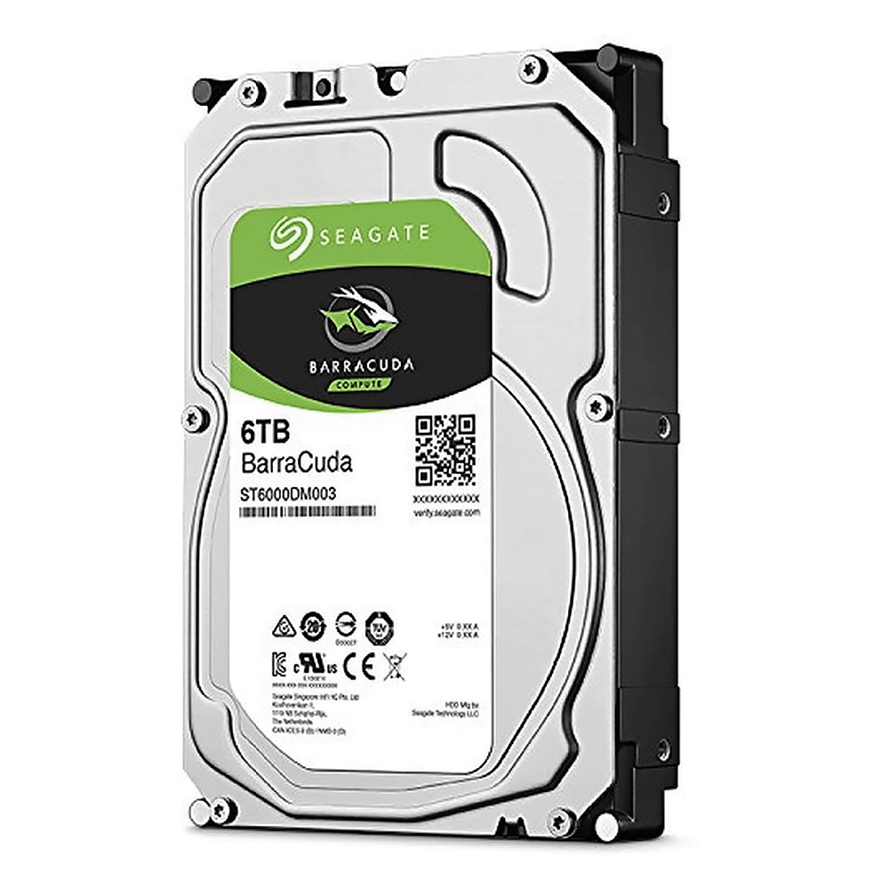
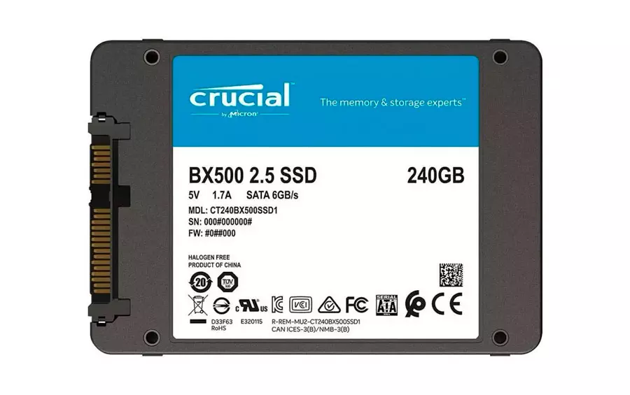
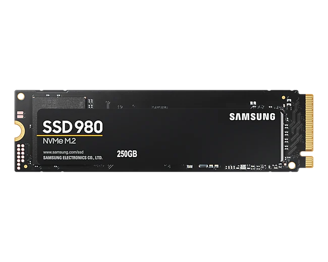
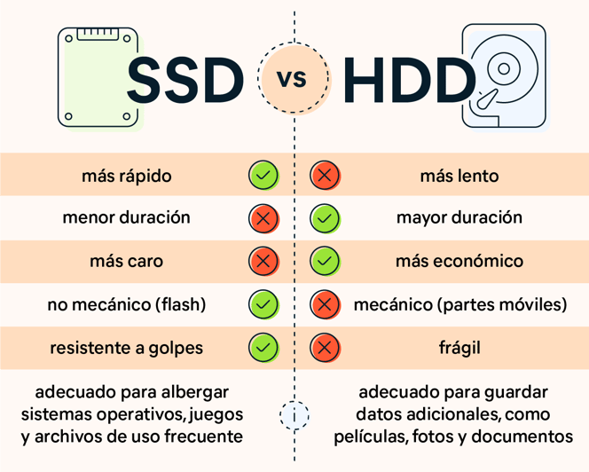

Dispositivos de almacenamiento
HDD/disco duro
Los discos duros son dispositivos de almacenamiento de datos en los que podemos almacenar cualquier tipo de información digital.Ya sean fotografías, vídeos, archivos de texto o programas informáticos, el disco duro es una de las partes más importantes de cualquier sistema informático.
SSD/Disco de estado solido
Un SDD (unidad de estado sólido) es una nueva generación de dispositivos de almacenamiento que se emplea en equipos. Los SSD reemplazan los discos duros mecánicos tradicionales con una memoria basada en flash, significativamente más rápida. pero debemos dejar claro que las memorias SSD NO SON discos duros.
Conectores M.2
M.2 es un tipo de interfaz con la que puedes conectar dispositivos de un tamaño bastante reducido, como memorias SSD. Esta interfaz utiliza el conector M.2 basado en PCI Express o un conector M.2 basado en SATA. Un dato importante a tener en cuenta es que cuanto mayor sea la longitud de la memoria SSD M.2 SATA o M.2 NVMe, más chips podrá llevar y más capacidad podrá tener.
Presentación
Se presenta en formatos de 2230 (22 x 30 mm), 2242 (22 x 42 mm), 2260 (22 x 60 mm), 2280 (22 x 80 mm), y 22110 (22 x 110 mm), y sigue el protocolo de conexión SATA o NVMe con velocidades de hasta hasta 550MB/s para los primeros y hasta 3500MB/s para los segundos.
Grafico comparativo de velocidad